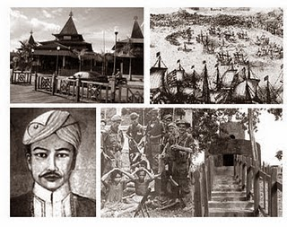
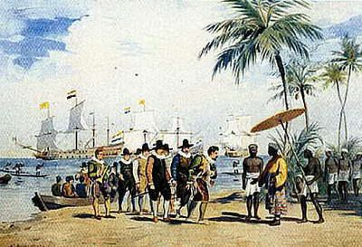
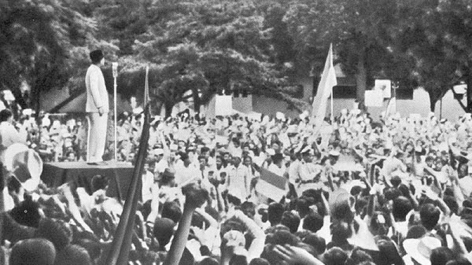
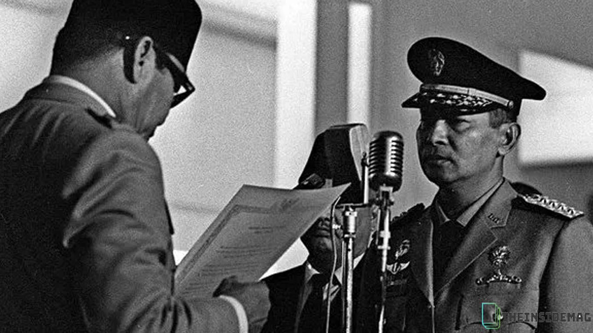
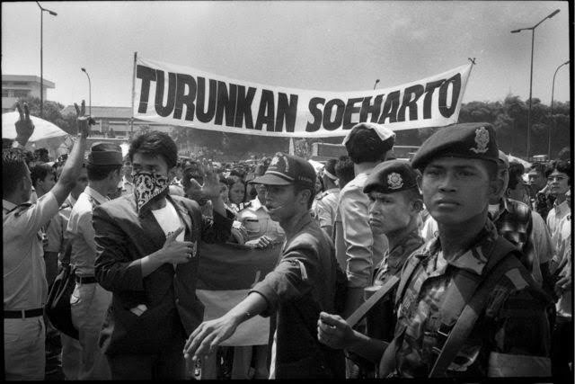

munculnya kerajaan-kerajaan bercorak Hindu-Buddha maupun Islam di Jawa dan Sumatera yang mengandalkan perdagangan.
masuknya bangsa barat (Eropa) seperti Belanda dan Portugis yang menginginkan rempah-rempah di Indonesia. Hal ini mengakibatkan penjajahan oleh Belanda selama sekitar 3,5 abad lamanya, dimulai awal abad ke-17 hingga pertengahan abad ke-20
Pasca-Proklamasi Kemerdekaan Indonesia (1945) hingga jatuhnya Presiden Soekarno pada tahun 1966.
Masa pemerintahan Soeharto yang berkuasa selama 32 tahun, mulai sejak tahun 1966 hingga tahun 1998.
berlangsung sampai sekarang.
Jagalah kemerdekaan Indonesia atas nama perjuangan PAHLAWAN, dengan menjunjung tinggi bhineka tunggal ika dan Pancasila yang menjadi dasar negara kita.